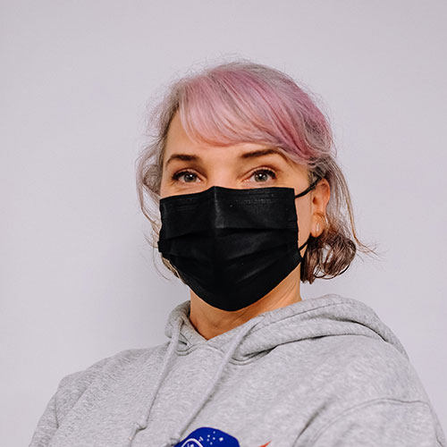
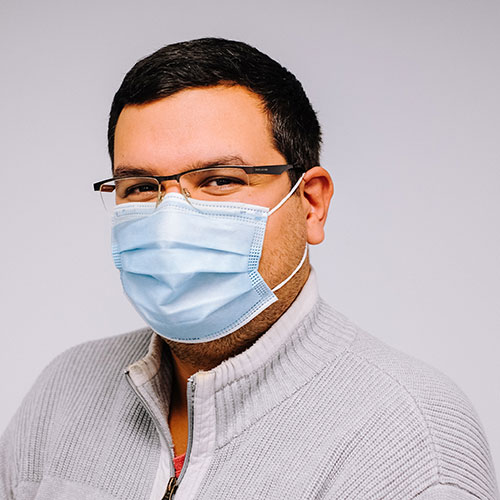

Qui sommes-nous?

« Ambre, 28 ans, habite à Paris. »
En couple avec mon chaton et je vis avec mon coloc.
Ancienne manager dans la pub. Fan d’Instagram, de TicToc (de tictac aussi), j’adore faire des photos et vidéos avec mon chaton.
J’ai envi de devenir développeuse web pour pouvoir lancer mon propre réseau social
et avoir mon compte le plus visible pour que le monde entier puisse admirer mon chaton.
« Arezki, 30 ans, habite à Montrouge. »
En couple, un enfant de 1 an. Ancien militaire, fan de Rambo et de Bear Grills, j’adore la survie.
L’indispensable en ce moment dans le kit de survie, le doliprane pour les dents de bébé.
On m’appelle le Shwarzy du clavier... Avec mon couteau, un clavier et je vous monte un site Web de luxe,
20 pages, des fenêtres pop up partout… et même un petit burger menu en prime.


« Sophie, 24 ans, habite à berck-sur-mer. »
En couple, un enfant et 2 chiens. Fan de ZIZITOP, Metallica, Louane… j’adore les sushis et Barbie.
Fan de salon de beauté, j’ai voulu en faire mon métier mais je suis allergique aux produits.
Je sais me servir de mes 10 doigts même pour bricoler… un vrai MacGyver.
Des amis m’ont parlé du métier de développeur web et comme j’étais douée avec mes doigts pour faire des masques comme des trous,
je me suis dis pourquoi ne pas essayer avec un clavier… (peu de chance d’être allergique au plastique)
« Yann, 44 ans, Issy-les-Moulineaux. »
En couple, 5 enfants de 2, 4, 8, 12 et 16 ans. 10 ans en grande distribution comme manager au rayon Alcools,
de nuit (c’est mieux pour les dégustations). J’adore les arts et les Martiaux.
Dégusté est aussi une passion donc un métier où on demande de pas trop bouger et pas trop se servir de sa tête,
ça me correspond pas trop mal.


« Bouchra, 30 ans, habite à Paris. »
En couple avec mon travail (et mon chérie accessoirement), je suis ambitieuse et je veux réussir cette formation.
Je voulais être président de la République mais je vais me contenter d’être développeur pour faire un programme pour diriger le monde.
Ma série favorite… Minus et Cortex car toutes les nuits, ces petites souris cobayes cherchent à conquérir le monde.
« Philippe, 20 ans, habite à Nanterre. »
Célibataire, j’ai fais une formation coiffure mais finalement, ça ne m’a pas plu, comme on dit dans le métier,
je n’ai pas trouvé perruque à mon crâne donc je change de voie.
Fan de World of Warcraft, je suis un elfe des ténèbres niv 90.
J’ai envie de créer mon propre jeu MMORPG pour être un seigneur du Web lvl 99, être le seul pour les dominer tous, être le précieux...